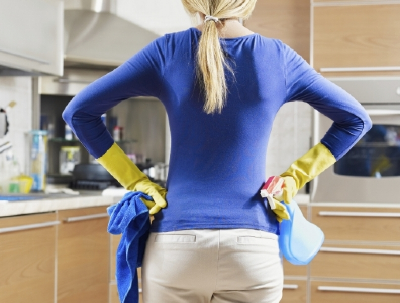

Guía de 5 pasos para acabar con el desorden en casa
Una de las cosas con las que se tiene que luchar cada día en casa es EL DESORDEN, este desmejora mucho la apariencia del hogar, arruina la decoración y por supuesto nos hace quedar mal, muy mal con nuestras visitas, una casa desordenada reduce mucho la calidad de vida de quienes viven en ella, pero ya no más, Bodegom te trae la guía de 5 pasos para eliminar el desorden de tu hogar, toma nota y manos a la obra:
-
1. Fija una fecha y hora:
Lo primero que se tiene que hacer para poner la casa en orden es fijar una fecha y hora, organízate con todos los miembros de tu familia y hagan un espacio en sus agendas para organizar la casa, todos serán beneficiados con esta actividad, te recomendamos elegir un sábado o domingo.
-
2. Organiza la casa por zonas
Planifica como se realizara la limpieza, organiza la casa por zonas y empieza de una habitación a la vez, trabajen en conjunto y aunque en un principio parezca que las otras zonas se están desordenando más te aseguramos que es la única forma en la que podrás realizar la organización correcta, empieza por el área del baño, después vallan todos a organizar la cocina, las recamaras, el jardín, etc.
-
3. Saca de tu casa lo que no necesitas
La idea principal de organizar la casa es lograr una armonía en donde vives, para eso es necesario deshacerte de las cosas que no usas y que no vas a utilizar nunca más, si tienes algún objeto que no has utilizado durante un año seguido es muy probable que solo este estorbando y creando caos en tu hogar, te recomendamos empezar a depurar todas esas cosas que no utilizas tan seguido haciéndote las siguientes preguntas ¿Utilizo esto? ¿Cuánto tiempo desde que utilizo esta cosa la última vez? ¿Lo voy a utilizar de nuevo? ¿Vale la pena el espacio que ocupa en mi casa?
-
4. Regresa lo que no es tuyo
Si guardas cosas en tu hogar que alguien te ha prestado, ¡regrésalas!, si alguien olvido sus patines y aun ocupan espacio en tu cochera, ve y entrégalos, no dejes nada que no sea tuyo, que todo eso regrese a su lugar.
-
5. Tira la basura
Las libretas de tercer grado, los estados de cuenta del banco de hace dos años, las revistas viejas, si todo eso es basura, tira todo en una bolsa y dile adiós. El objetivo de todo es que en tu casa solo guardes lo que tengas que guardar, que mantengas el desorden lejos y que tengas una casa armoniosa para ti y para tu familia. ¿Necesitas espacio extra? Contrata una bodega.